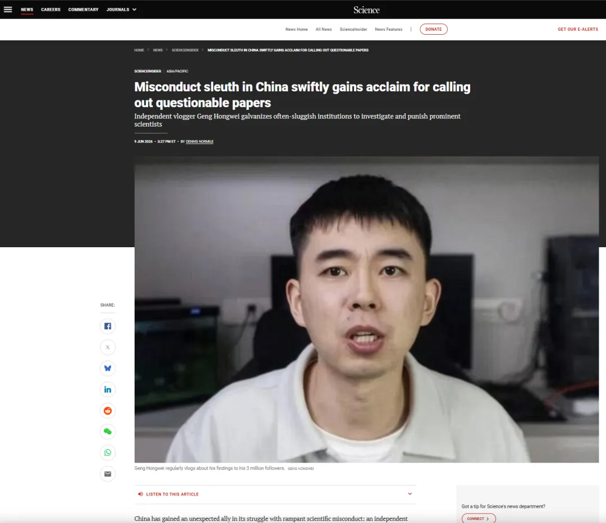

好事不出门，耿同学打假上了《Science》
原文：https://mp.weixin.qq.com/s?__biz=MzAwMzIzOTk5OQ==&mid=2247538743&idx=3&sn=382da529798f581ace00820c22e368dc&chksm=9b3c2167ac4ba8715fc0fe38220687002171443676c3d4f461b34867f4c6b135f7495dd5389d#rd 合集：漫谈胡侃
不知道是不是因为耿同学总对《Nature》系列重拳出击，《Science》下场火上浇油了。原文链接：https://www.science.org/content/article/misconduct-sleuth-china-swiftly-gains-acclaim-calling-out-questionable-papers

原文译文：
中国在应对猖獗的科学不端行为时意外地获得了一个盟友：一位独立视频博主，为数百万粉丝揭露有问题论文。
自今年四月以来，前北京航空航天大学生物医学博士生耿宏伟发现，中国一些顶尖大学著名科学家的论文中疑似使用了重复图像和可疑数据。他在《施普林格自然》期刊发表的九篇论文中指出的问题，引发了多次官方调查并解雇了多位高级学者。
观察人士表示，对耿的调查结果迅速反应以及当地媒体对丑闻的广泛报道，显示出官方对此罕见的宽容程度，甚至表示认可。
“此案是一个具有里程碑意义的事件，”黄冈师范大学研究诚信学者徐少雄说。“这很可能是首次有基层举报人利用社交媒体在中国官方媒体获得广泛且积极的报道。”
中国的科学不端问题并非秘密。北京大学神经科学家易饶表示，过去二十年里，来自该国的科学论文数量和出版物质量都在增加。与此同时，他补充道，不仅伪造文件的数量增加，比例也在增加，“创造了中国人无人自豪的历史纪录。”他说，尽管国家层面和个人做出了努力，即使是知名的不当行为案件也未受到惩罚。
耿或多或少是偶然进入了不端行为侦探的角色。研究生期间，他创办了视频博客频道“同学耿讲故事”。这些视频面向研究生同学，涵盖了研究进展，特别是生物医学领域;关于实验室生活的趣闻轶事;以及对学术不端行为的评论。2025年5月，由于对科研前景不满，他放弃了博士学业，开始全职视频博客。
耿偶尔发布的不当行为视频吸引了更多线索，他意识到自己在哔哩博里和抖音视频平台上拥有的300万粉丝，让他获得了超越普通举报者的曝光率。在接受《 科学》 杂志采访时，他表示，他决定针对知名科学家的不当行为，因为他们获得了丰厚的资金支持，应该被追究责任。他观察网络帖子中标记可疑图片和数据的帖子，并开始搜寻公开可访问的原始数据，寻找异常。例如，在一项研究人员记录小鼠体重的研究中，耿恩发现小鼠异常多为五，而非预期的随机数字频率。“这显然不是实验室通常会生成的数据，”耿说。
在过去两个月里，耿在九篇涉及中国著名科学家的生物医学论文中，提出了图像和/或数据操控的证据。这些都发表在施普林格《自然》期刊上，耿表示这些期刊受到中国顶尖科学家的青睐，且能提供更多原始数据，从而加强审查。（施普林格自然传播主管迈克尔·斯泰西在给 《科学》 杂志的邮件中写道：“我们正在严格调查提出的担忧，目前这些问题仍处于评估中。”）
大多数相关机构都已展开调查。同济大学、南开大学和中山大学已解雇或处分被判定为不当行为责任的基层研究人员，并因监管松懈而降职或解雇包括院长级学者在内的高级科学家。
日本广岛大学高等教育学者黄富涛表示，迅速的调查和纪律处分表明，研究诚信“已与中国的国际科学声誉及其成为全球科学领导者的雄心紧密相连”。这些回答与以往的做法形成鲜明对比。例如，2021年，中国科技部调查了由时任南开总裁曹学涛合著的60多篇论文中的图像操控指控。尽管在许多论文中发现“图像被滥用，反映实验室管理不严谨”，国防部仍认定没有欺诈证据，曹也仅受到轻微处罚。
耿表示，他从公众以及与政府官员有限接触中获得的反馈总体上是支持性的。他认为，从年轻研究人员那里获得的数十条建议表明他对当前研究实践“非常明显的不满”。他说，大量产出有缺陷的论文“对本国科学研究的发展极为不利”。他告诉 《科学 》杂志，他现在正在调查大约20篇可疑出版物。
他说，减少数据滥用的一种方法是让研究团队的其他成员独立复现关键实验。“如果我知道有人会复制[实验]，我就不敢伪造数据，”他说。
徐称，中国依赖像耿这样的博主揭露不当行为，暴露了机构监管的失误。在最近的一篇论文中，他和同事发现，在579所中国大学中，只有52.8%维护学术诚信网页，只有16.8%按照教育部的要求发布年度研究诚信报告。
黄博士表示，激励机制加剧了不端行为问题：对教师和学生的评价应减少发表数量和期刊声望，而更多依赖研究的原创性、可重复性和长期科学价值。大多数人同意，被判有不当行为的人也应受到更严厉的惩罚。正如拉奥所说，“应当有真正有影响力的机制和真正有责任感的官员，妥善公正地调查研究不端行为，并采取适当的纪律处分。”

如何联系我们

 留一个领取资料、开箱即用的单细胞分析镜像的微信号[Biomamba_zhushou]，方便各位随时交流。同时我们也构建了交流群矩阵，欢迎大家入群讨论。
大家可以阅读完这几篇之后添加给生信入门初学者的小贴士
没有检索，就没有发言权
留一个领取资料、开箱即用的单细胞分析镜像的微信号[Biomamba_zhushou]，方便各位随时交流。同时我们也构建了交流群矩阵，欢迎大家入群讨论。
大家可以阅读完这几篇之后添加给生信入门初学者的小贴士
没有检索，就没有发言权
已有生信基地联系方式的同学无需重复添加

 您点的每个赞和在看，我都认真当成了喜欢
您点的每个赞和在看，我都认真当成了喜欢